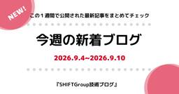
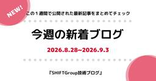

SHIFT Group 技術ブログ
https://note.shiftinc.jp
お客様の売れるソフトウェアサービス／製品づくりを支援する株式会社SHIFTの公式技術ブログ。AI開発・運用、教育・マーケティングなどあらゆる立場から携わるSHIFTグループ従業員が得た独自のナレッジを発信しています。※本アカウントに部分的にAI活用した記事が含まれます。
フィード

今週の新着ブログ 5本_cc-sdd仕様駆動開発の実戦記録_LiteLLMとAWS Bedrockで社内向けLLM環境を作ってみた(2026.9.4~9.10)
SHIFT Group 技術ブログ
こんにちは！「SHIFTグループ技術ブログ」編集部です。お役立ち記事を発信していますので、ぜひご注目ください！！本ブログは、IT技術だけでなくSHIFTグループのあらゆる知見やノウハウを広義の“技術”とし、入社歴や部署の垣根を超えて従業員が公式ブロガーとして記事を執筆しています。続きをみる
1日前
【SHIFTの技術ブログ】人気記事週間ランキングTOP10 Anki導入_G検定勉強法_AI活用の業務分解事例 2026/9/1-9/6
SHIFT Group 技術ブログ
『質問箱』はじめました！📬SHIFT Group 技術ブログへの質問こんにちは、SHIFT Group 技術ブログ編集部です！月曜～日曜までの一週間で、もっとも読まれた記事をご紹介します。※殿堂入り記事を除く 続きをみる
2日前

今週の新着ブログ 5本_AZ-305：Designing Microsoft Azure Infrastructure Solutionsに挑戦！ほか(2026.8.28~9.3)
SHIFT Group 技術ブログ
こんにちは！「SHIFTグループ技術ブログ」編集部です。お役立ち記事を発信していますので、ぜひご注目ください！！本ブログは、IT技術だけでなくSHIFTグループのあらゆる知見やノウハウを広義の“技術”とし、入社歴や部署の垣根を超えて従業員が公式ブロガーとして記事を執筆しています。続きをみる
2日前

「吾輩は猫である」から考える指示待ち人間になってしまう原因と解決案
SHIFT Group 技術ブログ
はじめまして。流通サービスグループの大村と申します。現在はECのテスト案件でPLを務めています。続きをみる
4日前

SHIFTのFDEは、ヒアリングをしない？AI BPaaSが導き出す業務最適化の正体
SHIFT Group 技術ブログ
FDEが現場で業務を586ステップまで可視化。わずか2カ月でプロセス最適化続きをみる
5日前


【SHIFTの技術ブログ】人気記事週間ランキングTOP10 2026/8/24-8/30
SHIFT Group 技術ブログ
『質問箱』はじめました！📬SHIFT Group 技術ブログへの質問こんにちは、SHIFT Group 技術ブログ編集部です！月曜～日曜までの一週間で、もっとも読まれた記事をご紹介します。※殿堂入り記事を除く 続きをみる
10日前
AIで速く作れる時代に、私たちは何を作るのか――Scrum Fest Osaka 2026登壇・参加レポート
SHIFT Group 技術ブログ
こんにちは。SHIFTのプロジェクトマネージャー／エンジニアの髙橋です。続きをみる
11日前
SHIFT DevRel Report【2026 -春-】
SHIFT Group 技術ブログ
みなさんこんにちは。SHIFTのDevRelメンバーのトキニです。私たちSHIFTのDevRelは「エンジニアの学びの場づくり」を通じて、社内外のエンジニアの架け橋となることを目指し、技術イベントの企画・運営や技術発信の取り組みを進めています。続きをみる
12日前
AWS SAA合格者がさらに頑張ってAZ-305：Designing Microsoft Azure Infrastructure Solutionsに挑戦し残り14点で合格まであと一歩だった件
SHIFT Group 技術ブログ
1．はじめに続きをみる
12日前
今週の新着ブログ 15本_連載「GitLab CI/CD基礎」_Amazon Bedrock AgentCore8つの注意点 ほか(2026.8.21~8.27)
SHIFT Group 技術ブログ
こんにちは！「SHIFTグループ技術ブログ」編集部です。お役立ち記事を発信していますので、ぜひご注目ください！！本ブログは、IT技術だけでなくSHIFTグループのあらゆる知見やノウハウを広義の“技術”とし、入社歴や部署の垣根を超えて従業員が公式ブロガーとして記事を執筆しています。続きをみる
15日前
Salesforceレポートで空欄のはずの電話番号が勝手に表示される？標準レポートタイプの仕様と解決策
SHIFT Group 技術ブログ
こんにちは、株式会社SHIFT 営業推進グループの水田です。 私たち営業推進グループでは、日々Salesforceで顧客データや営業活動を管理しており、データ確認や集計・分析の際には頻繁にSalesforceのレポート機能を利用しています。続きをみる
18日前